건축기사 (2011-03-20 기출문제)
1과목: 건축계획
1. 공장건축형식 중 파빌리온 타입(pavilion type)에 대한 설명으로 틀린 것은?
- 통풍, 채광이 좋다.
- 공장의 신설과 확장이 용이하다.
- 공간효율이 좋고 건축비가 저렴하다.
- 공장건설을 병행할 수 있으므로 조기완성이 가능하다.
(정답률: 77%)

2. 사무소건축에서 엘리베이터 죠닝에 대한 설명 중 옳지 않은 것은?
- 엘리베이터의 설비비를 절약할 수 있다.
- 일주시간이 단축되어 수송능력이 향상된다.
- 건물 전체를 몇 개의 그룹으로 나누어 서비스하는 방식이다.
- 내부교통의 편리성이 높아져 이용자에게 혼란을 줄 우려가 없다.
(정답률: 64%)
3. 다음 중 연면적에 대한 숙박 관계 부분의 비율이 가장 큰 호텔은?
- 리조트 호텔
- 클럽 하우스
- 커머셜 하우스
- 레지덴셜 호텔
(정답률: 87%)
4. 다음 중 고딕건축의 특징과 가장 관계가 깊은 것은?
- 바실리카(Basillica)
- 터스칸 양식(Tuscan order)
- 펜덴티브 돔(Pendentive dome)
- 플라잉 버트레스(flying buttress)
(정답률: 58%)
5. 도서관 출납시스템 형식 중 자유개가식에 대한 설명으로 옳은 것은?
- 서고와 열람실이 분리되어 있다.
- 도서열람의 체크시설이 필요하다.
- 책의 내용 파악 및 선택이 자유롭다.
- 대출절차가 복잡하고 관원의 작업량이 많다.
(정답률: 87%)
6. 건축가와 작품의 연결이 옳지 않은 것은?
- 렌조 피아노 - 로마 오디토리엄
- 아이 엠 페이 - 파리 아랍 문화원
- 루이스 칸 - 리차즈 의학연구소
- 안토니오 가우디 - 카사 밀라
(정답률: 60%)
7. 다음 중 극장 무대의 각 부분 명칭과 관계 없는 것은?
- 펜트리(pantry)
- 프로시니엄(proscenium)
- 사이클로라마(cyclorama)
- 그리드아이언(gridiron)
(정답률: 81%)
8. 다음 준 도서관에서 능률적인 작업용량으로서 20만권을 수장할 서고의 면적으로 가장 알맞은 것은?
- 300m2
- 500m2
- 700m2
- 1000m2
(정답률: 86%)
9. 주택단지계획에서 보차분리의 형태 중 평면분리에 해당 하지 않는 것은?
- T자형
- 루프(loop)
- 쿨데삭(Cul-de-Sac)
- 오버브리지(overbridge)
(정답률: 86%)
10. 다음의 학교운영방식에 관한 설명 중 옳지 않은 것은?
- 종합교실형(U형)은 각 학급마다 가정적인 분위기를 만들 수 있다.
- 교과교실형(V형)은 초등학교 저학년에 대해 가장 권장되는 방식이다.
- 플래툰형(P형)은 미국의 초등학교에서 과밀을 해소하기위해 실시한 것이다.
- 달톤형(D형)은 학급, 학년 구분을 없애고 학생들은 각자의 능력에 따라 교과를 선택하고 일정한 교과를 끝내면 졸업하는 방식이다.
(정답률: 88%)
11. 다음의 아파트 형식 중 거주자의 자연적 환경을 동일하게 만들고자 할 때 일반적으로 채용하는 것은?
- 집중형
- 편복도형
- 중복도형
- 계단실형 중 T형
(정답률: 82%)
12. 사무소 건축에서 오피스 랜드스케이핑(officelandscaping)에 대한 설명으로 옳지 않은 것은?
- 공간을 절약할 수 있다.
- 커뮤니케이션의 융통성이 있다.
- 일정한 기하학적 패턴에서 탈피할 수 있다.
- 실내에 고정된 칸막이가 있어 독립성이 우수하다.
(정답률: 90%)
13. 다음의 주택계획에 관한 설명 중 옳지 않은 것은?
- 부엌은 사용시간이 길고 부패하기 쉬운 물건을 많이 수장하는 곳이므로 서향은 피하는 것이 좋다.
- 50m2 이하의 소규모 주택에서는 복도를 두는 것이 공간 활용상 경제적이다.
- 주택의 규모가 비교적 적을 때에는 거실과 식사 부분을 동일공간으로 처리하여도 좋다.
- 현관의 크기는 주택의 규모와 가족의 수, 그리고 방문객의 예상 수 등을 고려한 출입량에 중점을 두는 것이 타당하다.
(정답률: 86%)
14. 병원 건축형식 중 분관식에 대한 설명으로 옳은 것은?
- 관리가 편리하고 동선이 짧게 된다.
- 대지가 협소할 경우에 주로 이용된다.
- 급수, 난방 등의 배관 길이가 짧게 된다.
- 각 병실마다 고르게 일조를 얻을 수 있다.
(정답률: 82%)
15. 호텔의 동선계획에 대한 설명 중 옳지 않은 것은?
- 고객동선과 서비스동선이 교차되지 않도록 한다.
- 숙박고객과 연회고객의 출입구는 별도로 분리하지 않는 것이 좋다.
- 숙박고객이 프런트를 통하지 않고 직접 주차장으로 가는 동선은 관리상 피하도록 한다.
- 최상층에 레스토랑을 둘 것인가 하는 문제는 엘리베이터 계획에도 영향을 미치므로 기본계획시에 결정하는 것이 좋다.
(정답률: 83%)
16. 상점 내에서 조명에 의한 반사 글레어(Reflected glare)를 방지하기 위한 대책으로 옳지 않은 것은?
- 젖빛 유리구를 사용한다.
- 간접조명방식을 채택한다.
- 반사면의 정반사율을 높게 한다.
- 광도가 낮은 배광기구를 이용한다.
(정답률: 77%)
17. 다음 중 상점 정면(facade)구성에 요구되는 5가지 광고요소(AIDMA 법칙)에 속하지 않는 것은?
- Attention(주의)
- Interest(흥미)
- Design(디자인)
- Memory(기억)
(정답률: 82%)
18. 주거단지계획시 보행자를 위한 공간계획에 관한 설명 중 옳지 않은 것은?
- 광장 등을 보행자 공간에 포함시켜 다양성을 높인다.
- 보행자가 차도를 걷거나 횡단하는 것이 용이하지 않도록 한다.
- 커뮤니티의 중심부에는 유보로(promenade)를 설치하지 않는다.
- 보행로에 흥미를 부여하여 질감, 밀도, 조경 및 스케일에 변화를 준다.
(정답률: 80%)
19. 한국건축의 의장적 특징에 대한 설명 중 옳지 않은 것은?
- 대부분의 한국건축은 인간적 척도 개념을 나타내는 특징이 있다.
- 기둥의 안쏠림으로 건축의 외관에 시지각적인 안정감을 느끼게 하였다.
- 한국건축은 서양건축과 달리 지붕면이 정면이 되고 박공면이 측면이 된다.
- 한국건축은 공간의 위계성이 없어 각 공간의 관계가 주(主)와 종(從)의 관계를 갖지 않는다.
(정답률: 69%)
20. 다음과 같은 특징을 갖는 건축적 채광방식은?
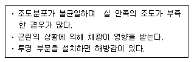
- 편측채광
- 양측채광
- 천장채광
- 정측광
(정답률: 75%)
2과목: 건축시공
21. 다음 시멘트 중 시멘트 분말의 비표면적이 가장 큰 것은?
- 보통 포틀랜드 시멘트
- 중용열 포틀랜드 시멘트
- 조강 포틀랜드 시멘트
- 백색 포틀랜드 시멘트
(정답률: 80%)
22. 다음 중 공동도급 방식에 대한 설명으로 옳지 않은 것은?
- 이견 조율이 용이하다.
- 회사간 상호기술을 보완한다.
- 조인트벤쳐(Joint venture)라고도 한다.
- 위험을 분산 부담하게 된다.
(정답률: 83%)
23. 토공사에서 되메우기에 관한 설명으로 옳지 않은 것은?
- 되메우기 흙은 30cm 두께마다 적당한 기구로 다짐밀도 95% 이상이 되게 충분히 다진다.
- 지하층 외벽과 흙막기벽 사이의 공간에는 입도가 좋은 양질의 토사로 층다짐하여 침하요인을 배제한다.
- 되메우기 간격이 1m 이내이면 사질토로 물다짐하는 것을 피하는 것이 좋다.
- 성토 후 다짐 상태는 현장 밀도 시험을 실시하여 적합성을 판정한다.
(정답률: 63%)
24. 콘크리트 혼화제 중 AE제를 첨가함으로써 나타나는 경과가 아닌 것은?(오류 신고가 접수된 문제입니다. 반드시 정답과 해설을 확인하시기 바랍니다.)
- 동결융해 저항성 증대
- 내구성 증진
- 철근과의 부착강도 증진
- 압축강도 감소
(정답률: 62%)
25. 다음 중 실비정산보수가산계약 제도의 특징이 아닌 것은?
- 설계와 시공의 중첩이 가능한 단계별 시공이 가능하다.
- 복잡한 변경이 예산되거나 긴급을 요하는 공사에 적합하다.
- 계약체결 시 공사비용의 최대값을 정하는 최대보증한도 실비정산보수가산계약이 일반적으로 사용된다.
- 공사금액을 구성하는 물량 또는 단위공사 부분에 대한 단가만을 확정하고 공사 완료시 실시수량의 확정에 따라 정산하는 방식이다.
(정답률: 66%)
26. 다음 중 굳지 않는 콘크리트의 성질에 관한 내용으로 옳지 않은 것은?
- 시멘트는 분말도가 높아질수록 점성이 낮아지므로 컨시스턴시도 커진다.
- 사용되는 단위수량이 많을수록 콘크리트의 컨시스턴시는 커진다.
- 입형이 둥글둥글한 강모래를 사용하는 것이 모가 진 부순모래의 경우보다 워커빌리티가 좋다.
- 비빔시간이 너무 길면 수화작용을 촉진시켜 워커빌리티가 나빠진다.
(정답률: 59%)
27. 건설클레임과 분쟁에 대한 설명으로 옳지 않은 것은?
- 클레임의 예방대책으로는 프로젝트의 모든 단계에서 시공의 기술과 경험을 이용한 시공성검토를 하여야 한다.
- 공기촉진클레임은 시공자가 스스로 계획공기보다 단축작업을 하거나 생산촉진을 위해 추가 자원을 필요로 할 때 발생한다.
- 분쟁은 발주자와 계약자의 상호 이견 발생 시 조정, 중재, 소송의 개념으로 진행되는 것이다.
- 클레임의 접근절차는 사전평가단계. 근거자료확보단계, 자료분석단계, 문서작성단계, 청구금액산출단계, 문서제출단계 등으로 진행된다.
(정답률: 70%)
28. 철근콘크리트 공사에서 콘크리트 타설에 관한 설명으로 옳지 않은 것은?
- 한 구획의 부어넣기가 시작되면 콘크리트가 일체가 되도록 연속적으로 부어넣어 콜드조인트가 생기지 않도록 한다.
- 콘크리트의 자유낙하높이는 콘크리트가 분리되지 않도록 가능한 한 높을수록 좋다.
- 타설순서는 기둥 → 보 → 슬래브 순으로 한다.
- 콘크리트를 부어넣는 속도는 각층을 충분히 다지기 할 수 있는 범위의 속도로 한다.
(정답률: 83%)
29. 다음 중 벽돌벽에 삼각형, 사각형, 십자형 등의 구멍을 벽면 중간에 규칙적으로 만들어 쌓는 방식에 해당하는 것은?
- 엇모쌓기
- 영롱쌓기
- 창대쌓기
- 허튼쌓기
(정답률: 77%)
30. 가설공사에서 강관비계 시공에 대한 내용으로 옳지 않은 것은?
- 가새는 수평면에 대하여 40 ~ 60° 로 설치한다.
- 강관비계의 기둥간격은 띠장 방향 1.5 ~ 1.8m 를 기준으로 한다.
- 띠장의 수직간격은 2.5m 이내로 한다.
- 수직 및 수평방향 5m 이내의 간격으로 구조체에 연결한다.
(정답률: 57%)
31. ALC 공사의 블록쌓기에 대한 설명으로 옳지 않은 것은?
- 공간쌓기는 안쪽벽을 주벽체로 한다.
- 블록 보수작업은 설치 후 1일 이상 경과 후에 시행한다.
- 연속되는 벽면에서 일부를 나중쌓기 할 경우는 층단 떼어쌓기로 한다.
- 줄눈부의 충전 모르타르 작업 후 기온변화가 0℃ 이하가 되는 경우는 동결방지를 위해 시트 등으로 보양해야 한다.
(정답률: 49%)
32. 높이 3m, 길이 200m의 벽을 시멘트 벽돌 1.0B 쌓기로 할 때 필요한 벽돌의 정미량은? (단, 벽돌규격 : 190×90×57mm)
- 84,500매
- 89,400매
- 92,000매
- 98,300매
(정답률: 73%)
33. 수밀콘크리트에 관한 설명 중 옳지 않은 것은?
- 수영장, 지하실 등 압력수가 작용하는 구조물에 시공하는 콘크리트이다.
- 골재는 입도분포가 고르고 흡수성이 작고 밀도가 큰 것을 사용한다.
- 콘크리트내의 기포는 수밀성을 저하시키므로 AE제를 사용하지 않는다.
- 콘크리트의 다짐을 충분히 하며 가급적 이어치기 하지 않는다.
(정답률: 79%)
34. 벽돌벽 균열의원인 중 계획ㆍ설계상의 미비와 가장 거리가 먼 것은?
- 건물의 평면, 입면의 불균형
- 온도 및 습기에 의한 재료의 신축성
- 벽돌벽의 길이, 높이에 비해 부족한 두께
- 문꼴 크기의 불합리 및 불균형 배치
(정답률: 69%)
35. 이형철근이라도 단부에 반드시 갈고리(hook)를 설치하여야 하는 경우가 있다. 다음 중 갈고리(hook)를 설치하지 않아도 되는 경우는?
- 스터럽
- 띠철근
- 굴뚝의 철근
- 지중보의 돌출부분의 철근
(정답률: 76%)
36. 지붕잇기 중 금속판 지붕 및 금속판 잇기에 대한 설명으로 옳지 않은 것은?
- 금속판 지붕은 다른 재료에 비해 가볍고, 시공이 용이하다.
- 겹침의 두께가 작으며 물매를 완만하게 할 수 있다.
- 열전도가 크고 온도변화에 의한 신축이 작기 때문에 바탕재와의 연결이 용이하다.
- 대기중에 장기간 노출되면 산화하며, 염류나 가스에 부식되기 쉽다.
(정답률: 56%)
37. 기계가 위치한 곳보다 높은 곳의 굴착에 적당한 것은 어느 것인가?
- Power Shovel
- Dragline
- Back hoe
- Scraper
(정답률: 84%)
38. 고강도 콘크리트에 관한 내용으로 옳지 않은 것은?
- 설계기준강도가 보통콘크리트의 경우 40MPa 이상인 것을 말한다.
- 물시멘트비를 감소시키기 위해 고성능 감수제를 사용한다.
- 단위수량, 단위시멘트량, 잔골재율은 소요워커빌리티 및 강도를 얻을 수 있는 범위 내에서 가능한 한 적게 한다.
- 슬럼프 값은 유동화콘크리트일 경우 250mm 이하로 한다.
(정답률: 64%)
39. 시멘트 액체방수에 대한 설명으로 옳지 않은 것은?
- 모체 표면에 시멘트 방수제를 도포하고 방수모르타르를 덧발라 방수층을 형성하는 공법이다.
- 옥상 등 실외에서는 효력의 지속성을 기대할 수 없다.
- 시공은 바탕처리 → 지수 → 혼합 → 바르기 → 마무리 순으로 진행한다.
- 시공 시 방수층의 부착력을 위하여 방수할 콘크리트 바탕면은 충분히 건조시키는 것이 좋다.
(정답률: 59%)
40. 쇄석 콘크리트에 대한 설명 중 옳지 않은 것은?
- 모래의 사용량을 보통 콘크리트에 비해서 많아진다.
- 쇄석은 각이 둔각인 것을 사용한다.
- 보통콘크리트에 비해 시멘트 페이스트의 부착력이 떨어진다.
- 깬자갈 콘크리트라고도 한다.
(정답률: 60%)
3과목: 건축구조
41. 다음 그림과 같은 인장재에서 순단면적을 구하면? (단, F10T-M20볼트 사용 판의 두께는 6mm임)
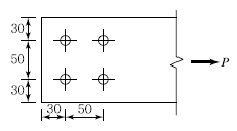
- 296 mm2
- 396 mm2
- 426 mm2
- 536 mm2
(정답률: 65%)
42. 절점 B에 외력 M=200kNㆍm가 작용하고 각 부재의 강비가 그림과 같을 경우 MAB는?(오류 신고가 접수된 문제입니다. 반드시 정답과 해설을 확인하시기 바랍니다.)
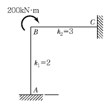
- 20 kNㆍm
- 40 kNㆍm
- 60 kNㆍm
- 80 kNㆍm
(정답률: 66%)
43. 그림과 같은 정정라멘에서 BD부재의 축방향력으로 옳은 것은? (단, + : 인장력, - : 압축력)
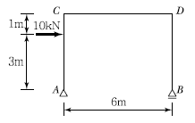
- 5 kN
- -5 kN
- 10 kN
- -10 kN
(정답률: 58%)
44. 다음 ( )안에 알맞은 숫자가 순서대로 옳게 짝지어진 것은? (단, KBC2009 기준)
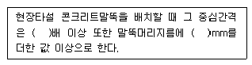
- 2.5, 900
- 2.5, 1000
- 2.0, 900
- 2.0, 1000
(정답률: 59%)
45. 용접 H형강 H-450×450×20×28의 플랜지 및 웨브에 대한 판폭두께비를 구하면?
- 플랜지 : 16.07, 웨브 : 14.07
- 플랜지 : 16.07, 웨브 : 19.7
- 플랜지 : 8.04, 웨브 : 14.07
- 플랜지 : 8.04, 웨브 : 19.7
(정답률: 53%)
46. 다음 그림과 같은 구조물의 판별은?
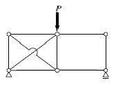
- 3차 부정정
- 2차 부정정
- 1차 부정정
- 불안정
(정답률: 60%)
47. 다음 강구조 접합부 중 회전저항에 유연해서 모멘트를 전달하지 않는 형태로 기둥에 보의 플랜지를 연결하지 않고 웨브만 접합한 형태는?
- 강접 접합부
- 스플릿 티 모멘트 접합부
- 전단 접합부
- 반강접 접합부
(정답률: 62%)
48. 그림과 같이 0점에 모멘트가 작용할 때 0B부재와 0C부재에 분배되는 모멘트가 같게 하려면 0C부재의 길이를 얼마로 해야 하는가?
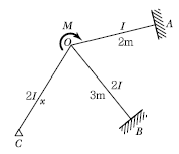
- 3/2 m
- 3 m
- 2/3 m
- 9/4 m
(정답률: 59%)
49. 단면의 폭 b=250mm, 높이 h=500mm인 직사각형 콘크리트 단면의 균열모멘트 Mcr을 구하면? (단, fck=24MPa)
- 8.3 kNㆍm
- 16.4 kNㆍm
- 24.5 kNㆍm
- 32.2 kNㆍm
(정답률: 58%)
50. 그림과 같은 중도리에 S=8kN의 전단력이 작용할 때 단면내에 생기는 최대전단응력도는?
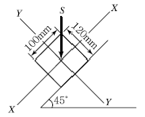
- 1 MPa
- 2 MPa
- 4 MPa
- 6 MPa
(정답률: 54%)
51. x축에 대한 단면2차모멘트 Ix = 12000cm4일 때, X축에 대한 단면2차모멘트 Ix값은? (단, x축은 단면의 중심축 X축에 평행하다.)
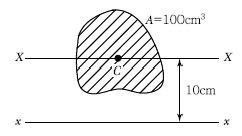
- 1200 cm4
- 2000 cm4
- 3200 cm4
- 4800 cm4
(정답률: 53%)
52. 강도설계법 적용시 그림과 같은 단근직사각형보의 최소철근량은? (단, fck = 21MPa, fy = 400MPa)
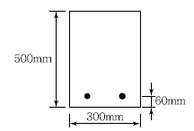
- 354 mm2
- 462 mm2
- 588 mm2
- 643 mm2
(정답률: 48%)
53. 다음 그림과 가은 보단면에서 정착되는 철근의 순간격을 구하면? (단, 주근 : D25, 스터럽 : D10@150, 최소피복두께 : 40mm)
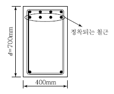
- 60.7 mm
- 63.7 mm
- 66.7 mm
- 69.7 mm
(정답률: 55%)
54. 다음 중 구조물의 내진보강 대책으로 적합하지 않은 것은?
- 구조물의 강도를 증가시킨다.
- 구조물의 연성을 증가시킨다.
- 구조물의 중량을 증가시킨다.
- 구조물의 감쇠를 증가시킨다.
(정답률: 71%)
55. 다음 캔틸레버보의 자유단의 처짐각은? (단, 탄성계수 E, 단면 2차모멘트 I)
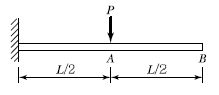
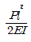
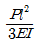
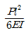
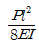
(정답률: 65%)
56. 등분포하중을 받는 그림과 같은 3회전단 아치에서 C점의 전단력을 구하면?
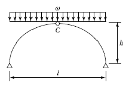
- 0
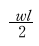
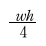
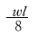
(정답률: 66%)
57. 다음 그림에서 지간이 같은 2개의 단순보의 하중 P에 의한 처짐 y1과 y2와의 비(比) 값은 얼마인가?
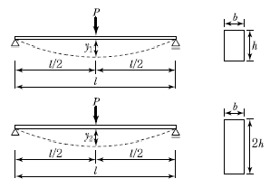
- 2 : 1
- 4 : 1
- 6 : 1
- 8 : 1
(정답률: 62%)
58. 콘크리트 압축강도 및 철근의 항복강도가 증가함에 따라 콘크리트와 철근의 탄성계수는 각각 어떻게 변화하는가?
- 콘크리트 : 증가, 철근 : 증가
- 콘크리트 : 증가, 철근 : 불변
- 콘크리트 : 감소, 철근 : 감소
- 콘크리트 : 불변, 철근 : 증가
(정답률: 60%)
59. 강도설계법에 의한 철근콘크리트 보에서 콘크리트만의 설계전단강도는 얼마인가? (단, fck=24MPa)
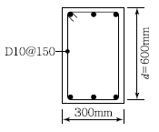
- 31.5 kN
- 75.8 kN
- 110.2 kN
- 145.6 kN
(정답률: 47%)
60. 다음 그림과 같이 용접을 할 때, 용접의 목두께(a)를 구하는 식으로 옳은 것은?
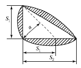
- a = 1.41S1
- a = 0.7S1
- a = 0.7S2
- a = 0.5S1
(정답률: 70%)
4과목: 건축설비
61. 급수배관의 설계 및 시공상의 주의점에 대한 설명으로 옳지 않은 것은?
- 급수관의 모든 기울기는 1/100을 표준으로 한다.
- 수평배관에는 공기나 오물이 정체하지 않도록 한다.
- 급수주관으로부터 분기하는 경우는 T이음쇠를 사용한다.
- 음료용 급수관과 다른 용도의 배관을 크로스 커넥션 해서는 안된다.
(정답률: 68%)
62. 주철제 보일러에 대한 설명 중 옳지 않은 것은?
- 재질이 약하여 고압으로는 사용이 곤란하다.
- 재질이 주철이므로 내식성이 약하여 수명이 짧다.
- 규모가 비교적 작은 건물의 난방용으로 사용된다.
- 섹션(section)으로 분할되므로 반입, 조립, 증설이 용이하다.
(정답률: 73%)
63. 조명기구를 배광에 따라 분류할 경우, 다음과 같은 특징을 갖는 것은?
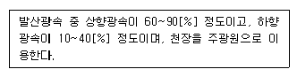
- 직전조명
- 반직접조명기구
- 전반확산조명기구
- 반간접조명기구
(정답률: 68%)
64. 다음과 같은 조건에서 난방부하가 3,500W인 실을 온수 난방으로 할 때 방열기의 온수 순환수량은 약 얼마인가?
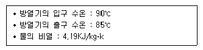
- 300 kg/h
- 600 kg/h
- 900 kg/h
- 1,200 kg/h
(정답률: 54%)
65. 다음 중 약전설비에 속하는 것은?
- 변전설비
- 간선설비
- 피뢰침설비
- 전화설비
(정답률: 77%)
66. 건구온도가 25℃인 실내공기 8000 m3/h 와 건구온도 31℃인 외부공기 2000 m3/h 를 단열혼합하였을 때 혼합공기의 건구온도는?
- 24.8 ℃
- 26.2 ℃
- 26.5 ℃
- 29.8 ℃
(정답률: 74%)
67. 다음 중 상점의 내부조명으로 사용이 가장 부적합한 것은?
- 백열전구
- 형광램프
- 할로겐램프
- 고압나트륨램프
(정답률: 66%)
68. 통기관에 대한 설명 중 옳지 않은 것은?
- 각개통기관은 1개의 기구트랩을 통기하기 위해 설치하는 통기관이다.
- 통기의 목적 외에 배수관으로도 이용되는 부분을 습통기관이라고 한다.
- 루프통기관은 배수와 통기 양 계통간의 공기의 유통을 원활히 하기 위해 설치하는 통기관이다.
- 신정통기관은 최상부의 배수수평관이 배수수직관에 접속된 위치보다도 더욱 위로 배수수직관을 끌어올려 대기중에 개구하여 통기관으로 사용하는 부분을 말한다.
(정답률: 43%)
69. 겨울철 주택의 단열 및 결로에 대한 설명 중 옳지 않은 것은?
- 단층 유리보다 복층 유리의 사용이 단열에 유리하다.
- 단열이 잘 된 벽체는 내부결로는 없으나 표면결로가 발생하기 쉽다.
- 실내측에 방습막을 부착할 경우, 구조체의 내부결로 방지에 효과적이다.
- 실내측 벽 표면온도가 실내공기의 노점온도보다 높은 경우 표면결로는 발생하지 않는다.
(정답률: 56%)
70. 직류 엘리베이터의 종류 중 권상기 자체가 전동기만으로 되어 있는 방식으로 고속, 초고속 엘리베이터에 이용되는 것은?
- 기어드 엘리베이터
- 기어레스 엘리베이터
- 유압식 엘리베이터
- 로프식 엘리베이터
(정답률: 78%)
71. 배관에 설치하는 밸브, 트랩, 기기 등의 앞에 설치하여 관 속의 유체가 섞여 있는 모래, 쇠ㅣ부스러기 등의 이물질을 제거하여 기기의 성능을 보호하는 것은?
- 소켓
- 플랜지
- 유니언
- 스트레이너
(정답률: 65%)
72. 다음 중 급수배관계통에서 공기빼기밸브를 설치하는 가장 주된 이유는?
- 수격작용을 방지하기 위하여
- 관내면의 부식을 방지하기 위하여
- 배관의 흐름을 원활하게 하기 위하여
- 관표면에 생기는 결로를 방지하기 위하여
(정답률: 59%)
73. 옥내소화전의 설치개수가 가장 많은 층의 설치개수가 4개인 경우, 옥내소화전설비의 수원의 저수량은 최소 얼마이상이 되도록 하여야 하는가?
- 6.4 m3
- 10.4 m3
- 14 m3
- 28 m3
(정답률: 69%)
74. 주위 온도가 일정온도 상승률 이상이 되었을 때 작동하는 것으로 국소적 열효과에 의하여 작동하는 감지기는?
- 차동식 스포트형 감지기
- 정온식 스포트형 감지기
- 정온식 감지선형 감지기
- 광전식 연기 감지기
(정답률: 73%)
75. 다음과 같은 조건에서 연면적이 2,000m2 인 사무소 건물에 필요한 급수량은?
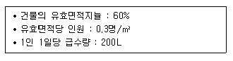
- 72,000 [L/d]
- 72000 [L/h]
- 120,000 [L/d]
- 120,000 [L/h]
(정답률: 63%)
76. 다음의 보안상 비상전원이 필요한 소방용 설비 중 자가발전설비를 설치하지 않아도 되는 것은?
- 옥내소화전 설비
- 스프링클러 설비
- 비상콘센트 설비
- 무선통신 보조설비
(정답률: 56%)
77. 다음 중 엘레베이터의 안전장치와 가장 관계가 먼 것은?
- 조속기
- 전자 브레이크
- 종점 스위치
- 핸드 레일
(정답률: 74%)
78. 송풍기 출구 부근에 플리넘 챔버를 부착하는 가장 주된 이유는?
- 속도조절
- 소음저감
- 기류방향조절
- 화재방지
(정답률: 64%)
79. 고온수 난방방식에 대한 설명으로 옳지 않은 것은?
- 공급과 환수의 온도차를 크게 할 수 있으므로 열수송량이 크다.
- 공업용과 같이 고압증기를 다량으로 필요로 할 경우에는 부적당하다.
- 배관은 상하구배가 가능하고 지형이나 건물의 상황에 의한 높이의 변화가 가능하다.
- 지역난방에는 이용할 수 없으며 높이가 높고 건축면적이 넓은 단일 건물에 주로 이용된다.
(정답률: 63%)
80. 습공기 선도에 표현되어 있지 않은 것은?
- 비체적
- 엔탈피
- 열용량
- 노점온도
(정답률: 58%)
5과목: 건축법규
81. 다음의 노외주차장의 설치에 관한 계획기준 내용 중 ( )안에 알맞은 것은?
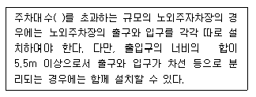
- 200대
- 300대
- 400대
- 500대
(정답률: 32%)
82. 교육연구시설 중 연구소는 당해 용도에 사용되는 바닥면적의 합계가 최소 얼마 이상인 경우, 건축허가 신청시 에너지절약계획서를 제출하여야 하는가?(오류 신고가 접수된 문제입니다. 반드시 정답과 해설을 확인하시기 바랍니다.)
- 500m2
- 2,000m2
- 3,000m2
- 10,000m2
(정답률: 38%)
83. 건축물의 피난층 또는 피난층의 승강장으로부터 건축물의 바깥쪽에 이르는 통로에 경사로를 설치하여야 되는 것은?
- 교육연구시설 중 학교
- 연면적인 3천제곱미터인 판매시설
- 연면적인 3천제곱미터인 운수시설
- 제2종 근린생활시설
(정답률: 55%)
84. 지구단위계획의 내용에 포함되어야 하는 사항이 아닌 것은?
- 교통처리계획
- 건축물의 용도제한
- 건축물의 사선제한
- 건축물의 건폐율 또는 용적율
(정답률: 52%)
85. 용도지역별 건폐율의 최대한도가 옳지 않은 것은?
- 준주거지역 : 70% 이하
- 자연녹지지역 : 20% 이하
- 일반상업지역 : 90% 이하
- 제2종 전용주거지역 : 50% 이하
(정답률: 40%)
86. 다음 준 대수선에 속하지 않는 것은?
- 내력벽을 증설하는 것
- 방화벽을 수선 또는 변경하는 것
- 미관지구에서 건축물의 담장을 변경하는 것
- 학교의 교실 간 경계벽을 수선 또는 변경하는 것
(정답률: 57%)
87. 다음 중 해당 용도에 사용되는 바닥면적의 합계에 의해 용도 분류가 다르게 되지 않는 것은?
- 종교집회장
- 치과병원
- 골프연습장
- 휴게음식점
(정답률: 51%)
88. 건축물을 건축하거나 대수선하는 경우 국토해양부령으로 정하는 구조기준 등에 따라 그 구조의 안전을 확인하여야 하는 대상 건축물이 아닌 것은?(오류 신고가 접수된 문제입니다. 반드시 정답과 해설을 확인하시기 바랍니다.)
- 높이가 12m인 건축물
- 층수가 4층인 건축물
- 처마높이가 9m인 건축물
- 기둥과 기둥사이 거리가 15m인 건축물
(정답률: 54%)
89. 6층 이상의 거실면적의 합계가 12,000m2인 12층의 공동주택에 설치하여야 하는 8인승 승용승강기의 최소 대수는?
- 2대
- 3대
- 4대
- 5대
(정답률: 58%)
90. 바닥면적 산정시 포함되는 것은?
- 더스트 슈트
- 층고가 2.0m인 다락
- 공동주택으로서 지상층에 설치한 기계실
- 공동주택으로서 지상층에 설치한 어린이 놀이터
(정답률: 72%)
91. 지하식 또는 건축물식 노외주차장의 차로에 관한 기준내용으로 옳지 않은 것은?
- 경사로의 노면은 거친 면으로 하여야 한다.
- 높이는 주차바닥면으로부터 2.3미터 이상으로 하여야 한다.
- 경사로의 종단경사도는 직선부분에서는 14퍼센트를 초과하여서는 아니 된다.
- 주차대수 규모가 50대 이상인 경우의 경사로는 너비 6미터 이상인 2차로를 확보하거나 진입차로와 진출차로를 분리하여야 한다.
(정답률: 69%)
92. 건축법에 따라 건축물의 대지에 공개 공지 또는 공대 공간을 확보하여야 하는 대상 건축물이 아닌 것은? (단, 연면적의 합계가 5천 제곱미터 이상인 경우)
- 종교시설
- 의료시설
- 숙박시설
- 문화 및 집회시설
(정답률: 62%)
93. 가설건축물을 축조하려고 할 때 특별자치도지사 또는 시장ㆍ군수ㆍ구청장에게 신고하여야 할 대상 가설건축물에 해당하지 않는 것은?
- 농업용 고정식 온실
- 전시를 위한 견본주택
- 공장에 설치하는 창고용 천막
- 조립식 구조로 된 경비용에 쓰는 가설건축물로서 연면적이 15제곱미터인 것
(정답률: 52%)
94. 다음 중 건축법에 사용되는 용어의 정의가 옳지 않은 것은?(오류 신고가 접수된 문제입니다. 반드시 정답과 해설을 확인하시기 바랍니다.)
- 초고층 건축물이란 층수가 50층 이상이거나 높이가 200미터 이상인 건축물을 말한다.
- 거실이라 함은 건축물 안에서 거주, 집무, 작업, 집회, 오락, 그 밖에 이와 유사한 목적을 위하여 사용되는 방을 말한다.
- 지하층이란 건축물의 바닥이 지표면 아래에 있는 층으로서 바닥에서 지표면까지 평균높이가 해당 층 높이의 2분의 1 이상인 것을 말한다.
- 리모델링이란 건축물의 노후화를 억제하거나 기능 향상 등을 위하여 대수선하거나 개축하는 행위를 말한다.
(정답률: 64%)
95. 출입구의 개수에 관계없이 노외주차장의 차로의 너비를 6m로 하여야 하는 주차형식은?
- 평행주차
- 직각주차
- 대향주차
- 교차주차
(정답률: 62%)
96. 문화 및 집회시설 중 공연장의 개별 관람석의 바닥면적이 600m2인 경우, 개별 관람석에 설치하는 출구에 관한 설명으로 옳은 것은?
- 3개소 이상 설치하여야 한다.
- 출구는 안여닫이로 하여야 한다.
- 각 출구의 유효너비는 1.8m 이상으로 하여야 한다.
- 출구의 유효너비의 합계는 3.6m 이상으로 하여야 한다.
(정답률: 52%)
97. 국토해양부령으로 정하는 기준에 따라 채광 및 환기를 위한 창문등이나 설비를 설치하여야 하는 대상에 속하지 않는 것은?
- 의료시설의 병실
- 숙박시설의 객실
- 사무소의 설계ㆍ제도실
- 교육연구시설 중 학교의 교실
(정답률: 71%)
98. 시설면적이 1900m2인 제2종 근린생활시설에 설치하여야 하는 부설주차장의 최소 대수는?
- 7대
- 10대
- 11대
- 13대
(정답률: 58%)
99. 건축물의 대지는 원칙적으로 최소 몇 미터 이상이 도로에 접하여야 하는가?
- 1
- 2
- 3
- 4
(정답률: 72%)
100. 주거지역 중 단독주택 중심의 양호한 주거환경을 보호하기 위하여 지정하는 지역은?
- 제1종 전용주거지역
- 제2종 전용주거지역
- 제1종 일반주거지역
- 제2종 일반주거지역
(정답률: 73%)